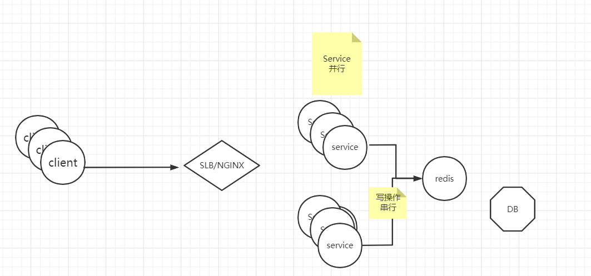
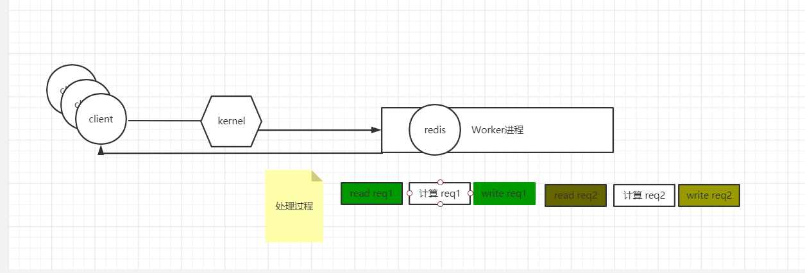
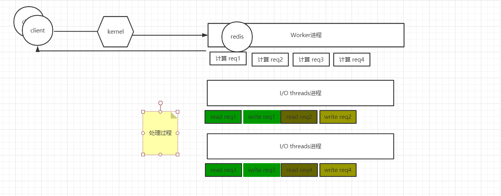

[toc]
Redis 特点
-
Value有类型，自带本地计算方法（数据运算）
-
多路复用模型（redis 优先选则epoll模型）
-
woker单线程，i/o threads 多线程（redis 6.x版本以上）
Value有类型，自带本地计算方法（数据运算）
redis的value是多类型且自带本地方法，这与memc样，memchache的值类型只有字符串。比如发送请求获取一个list的key的value，redis可以在本地调用index（）计算，而memcache只能够返回一段json，只能客户端从着端json里先反序列化，然后获取对应的key。这也是为什么memcache比redis早，却流行多不如redis的原因之一吧。
多路复用模型
i/O 多路复用模型是利用select、poll、epoll可以同时监察多个流的 I/O 事件的能力，在空闲的时候，会把当前线程阻塞掉，当有一个或多个流有I/O事件时，就从阻塞态中唤醒，于是程序就会轮询一遍所有的流（epoll是只轮询那些真正发出了事件的流），依次顺序的处理就绪的流，这种做法就避免了大量的无用操作。这里“多路”指的是多个网络连接，“复用”指的是复用同一个线程。采用多路 I/O 复用技术可以让单个线程高效的处理多个连接请求（尽量减少网络IO的时间消耗），且Redis在内存中操作数据的速度非常快（内存内的操作不会成为这里的性能瓶颈），主要以上两点造就了Redis具有很高的吞吐量。
woker单线程，i/o threads 多线程（6.X 之后的版本）
为什么worker要单线程，不使用多线程
从一个全局角度去俯视一个web网站架构图,对数据DB的进行Write操作的时候，无论前面的server有多少在并行，处理数据一定是串行，如果是多线程，必然要考虑加锁解锁的过程，加锁的本质也是一个串行流程，因此从这点来看，redis选择单线程的模式，反而比采用多线程的模式相对而言，不会出现复杂算法问题，且效率较高。redis实际上是采用了线程封闭的观念，把任务封闭在一个线程，自然避免了线程安全问题，不过对于需要依赖多个redis操作的复合操作来说，依然需要锁，而且有可能是分布式锁，

这么一来不当紧，因为redis是单线程的，一个redis服务，**worker进程只能够跑在一个cpu上，因此cpu的资源使用率会带来浪费吗？**带着着疑问我们来看一下，如果redis 是一个worker线程去处理数据请求的过程是怎样的？

如果只有一个woker线程的话，一个请求过来，worker线程首先要读取请求，然后计算数据 ,最后写入返回结果。当一个请求处理完之后，依次处理第二个请求。这样一来，我们会发现如果采用这种机制，redis处理请求的方式一定是不连续的，因为计算第一请求的时候，i/o处理会等待redis计算时间。
因此redis,采用i/o threads的机制。用i/o threads线程来处理 i/o请求，用worker进程来计算。这样几乎可以认为是连续的响应请求。
Redis(6.X版本的I/O threads模式是多线程模式）
